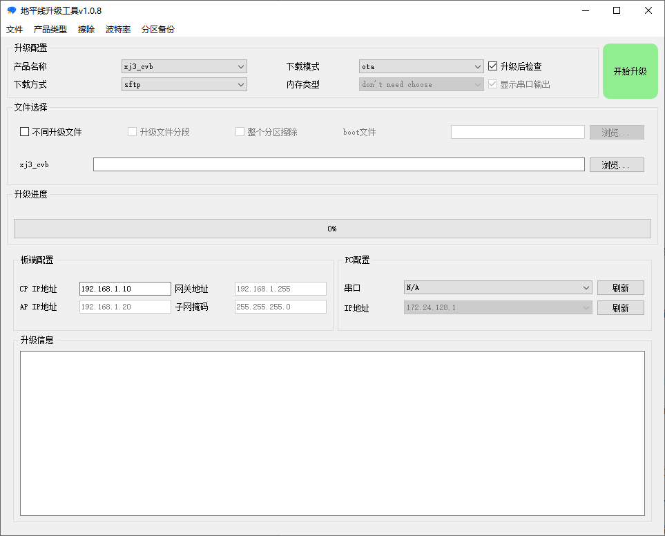

固件升级手册¶
本章节我们将会围绕 X3 SDB 开发板介绍如何进行板卡系统固件升级，J3 DVB开发版本使用方法类似。
1. 系统镜像¶
XJ3 芯片的系统为 嵌入式Linux ，固件采用预先编译好镜像 X3J3-Img-PL2.0-${version}.tgz 和PlatformSDK源码 X3J3-PlatformSDK-PL2.0-${version}.tgz 两种方式进行发布，详细请参考 bsp/ 发布目录。其中对于 PlatformSDK 源码发布包，支持用户根据自己的需求来对源码功能进行裁剪或修改，并编译生成自己私有的系统镜像。
在 PlatformSDK 源码包中，我们已经自带交叉编译工具链，并配置好了编译脚本等参数，路径在 bsp/PlatformSDK/prebuilts/host，用户只需要搭建好编译环境，即可快速完成系统镜像的源码编译。目前我们支持在Ubuntu18.04 和 Centos7 两个系统下编译 PlatformSDK。
对于 Ubuntu18.04，需要按照以下命令搭建编译环境:
sudo apt install build-essential
sudo apt-get install make
sudo apt install cmake
sudo apt install bison
sudo apt install flex
sudo apt-get install python-numpy
sudo apt install android-tools-fsutils
sudo apt install mtd-utils
sudo apt install zlib1g-dev
对于 Centos7 系统，需要按照如下命令搭建编译环境：
yum install glib cmake gcc bison flex minicom python-pip
pip install numpy
yum install make_ext4fs-1.0.0-1.el7.x86_64.rpm
yum install zlib-devel
yum install mtd-utils-1.5.0-2.el6.nux.x86_64.rpm
环境配置后，采用如下指令进行编译：
source ./build/envsetup.sh
lunch
./build.sh -m {memory_type} -f {frequency} -i2
其中 build.sh 可配置参数如下，用户可以根据开发板硬件配置编译出对应的镜像
bash build.sh -h
[-c src|pre|mod|none] [-h]
[-b <xj3|cvb|x3dvb|j3dvb|customer|fpga>_<ap|uart|emmc|nor|nand>]
[-f 2133|2666|3200|3733|4266]
[-e uboot|all|ut|nor|nand|ft|gui|ful|cramfs|squashfs|cpio]
[-E DDR ECC pre defined mode select |0|1|2|3|4]
[-k sdk|exsdk]
[-d dual_boot]
[-v db|dt]
[-r recovery]
[-u ubifs]
[-n ddr_name]
[-m hynix|micron|samsung]
[-t LPDDR4|LPDDR4X|DDR4|DDR3L]
[-a 1|2|4]
[-o x3som|j3som]
[-p yes|no]
[-g stresstest|gcov]
[-s all | secure | kernel | avb_dm]
[-x 0|1]
[-l]
[-i] set ddr_alternative, no blank bewteen i and set value
[-I] enable dfs
[modulename [action]]
完整参数如下：
-c default is mod
'src' means build minimal rootfs from yocto and all modules in MODULES_MANIFEST
'mod' means get rootfs from prebuilts and build all modules in MODULES_MANIFEST
'pre' means get binaries from prebuilts
'none' means build specified module
-k build sdk
'sdk' contains include,lib and example
'exsdk' contains more contents
-v build version db - daily build dt - distribution release
-e build image
'uboot' means build image up until uboot
'all' means all partitions combine in, no unittest
'ut' means unittest will be combined in
'ft' means factory test image
'nor' means norflash
'nand' means nandflash
'nand_4096' means nandflash with 4096 pagesize
'gui' means rootfs with minigui
'ful' means rootfs with large size for app debug
'cramfs' means rootfs type is cramfs, according to ramdisk.manifest
'squashfs' means rootfs type is squashfs, according to ramdisk.manifest
'cpio' means Image with cpio according to ramdisk.manifest
-E ddr ECC pre defined mode select
0--off
1--gran 0(1/8) map 127(01111111) , default option
2--gran 0(1/8) map 15(00001111)
3--gran 1(1/16) map 127(01111111)
4--gran 1(1/16) map 15(00001111)
append: DDR_SBR_PATTERN0 DDR_SBR_PATTERN1 can be set,to initialize related registers at ddr initialization
-f ddr frequences. Default is 2666
-b choose board type and boot mode and set environment BOARD_TYPE and BOOT_MODE. i.e., svb_emmc. Default is 0som_emmc
-d dual boot partiton
-r build recovery.gz
'recovery' means support recovery mode
-u flash file system selection
'ubifs' means using ubifs file system in flash
-n ddr manufacturer's name, default is ddrphy_phyinit
-F enable FDE(Full Disk Encryption) feature
-g special test options
'stresstest' means using test spl image
'gcov' means build gcov coverage test image
-s select secure image type, by default, ONLY Kernel verification is enabled
'all' means build all images with different verification modes where disk.img is the default image
'secure' means EFUSE encryption, Kernel verification and dm-verity are enalbed
'kernel' means ONLY Kernel verification is enabled (NO EFUSE or dm-verity)
'avb_dm' means ONLY Kernel verification and dm-verity is enalbed (NO EFUSE)
-x BPU framework version default, version 0
'0':bpu framework version 0
'1':bpu framework version 1
-i set ddr_alternative in boardid, set to 1(default) in xg-1g is used for compile dfs image,
set to 2 is xg-2g,no blank bewteen i and set value
-l gets the minimum boot log image, include spl, bl31, uboot and kernel log
modulename module in the MODULES_MANIFEST. If not selected, no module will be rebuild.
if 'all' is present, it means all modules in MODULES_MANIFEST are selected
action all, all_32, clean
'all' means compile 64-bit module, only used when TARGET_BIT is 64
'all_32' means compile 32-bit module, only used when TARGET_BIT is 32
'clean' means clean up module
示例如下：
build xj3 sdb samsung 3200 image : ./build.sh -m samsung -f 3200 -i2 -s secure
编译完成会基于 PlatformSDK 文件夹输出一个 out/horizon_x3-release.64/target/deploy/ 文件夹，与预先编译好的镜像 X3J3-Img-PL2.0-${version}.tgz 压缩包解压后的目录结构一致，如下所示。
PLATFORMSDK_OUT
├── 30500020-emmc-3200-all-gpt.conf
├── 30500020-emmc-3200-all-gpt-dual.conf
├── bl31
├── bl31.img
├── boot
├── boot.img
├── bpu
├── combind_disk_app
├── cr5
├── ddr
├── ddr.img
├── disk.img
├── fastboot_config.json
├── gen_disk.sh
├── gen_ota.sh
├── gpt_backup_dual.img
├── gpt_backup.img
├── gpt_main_dual.img
├── gpt_main.img
├── mbr
├── mbr.bin
├── ota
├── recovery
├── recovery.img
├── sbl
├── sbl.img
├── system
├── system.img
├── uboot
├── ubootbak
├── uboot.img
├── usb_uart_pkg
├── vbmeta
├── vbmeta.img
├── veeprom
└── veeprom.img
PLATFORMSDK_OUT 目录中包含了每个分区镜像及 gen_disk.sh 打包脚本，说明如下。
bash gen_disk.sh -h
usage: gen_disk.sh <-b board> [-s] [-u] [-t Debug/Release] [-i uboot] [ -l ] [-o output_file] [-F]
avaliable board : -b xj3(auto detect), x3_dvb, j3_dvb, xj3_cvb, xj3_sdb, xj3_cus(customer) board
output file name : -o specify the output file name instead of generate automatically
secure image : -s generate secure image
unittests : -u generate images with unittests
uboot image : -i uboot contain the image before uboot partition
optimize boot : -l reduce boot log for performance test and projects that are needed
ddr type : -m specify ddr type, e.g. hynix_lpddr4
dual_boot : -d generate dual_boot disk image, currently only supported on emmc
force generate : -F ignore any missing files and generate disk.img
dfs boot : -k generate image to support dfs, supported in only non-secure image
cvb power test : -c generate image to support cvb 3200 power test
pin secure mode : -p generate image to support boot pin secure mode to test suspend/resume
ddr_alternative : -a set ddr_alternative, set to 2 in xg is used for xg-2g
4096 nand page : --nand_4096 generate nand image of 4096 page size
示例如下:
build xj3 UT disk image : ./gen_disk.sh -b xj3 -u
build xj3 normal disk image : ./gen_disk.sh -b xj3
build xj3 micron ddr4 disk image : ./gen_disk.sh -b xj3 -m micron_ddr4
build xj3 secure disk image : ./gen_disk.sh -b xj3 -s -F
build xj3 UT dual boot disk image : ./gen_disk.sh -b xj3 -u -d
build xj3 samsung 3200 image : ./gen_disk.sh -b xj3 -u -t Release -m samsung -a 2 -F -s
gen_disk.sh 脚本所生成的镜像受具体参数设置的影响。因此用户可调整具体参数值生成定制化的镜像。
1. 升级工具¶
针对板卡系统升级，我们提供了一键式工具 hbupdate，支持通过网口，串口以及 USB 口对板卡进行升级，完整工具集合请参考 tools/ 目录，其中包括：
0A_PL2302-USB-to-Serial-Comm-Port.zip：PL2303 串口驱动
0A_CP210x_USB2UART_Driver.zip: CP210X 串口驱动
0A_PL2303-M_LogoDriver_Setup_v202_20200527.zip: PL2302 串口驱动
0B_hbupdate_win64_${version}.zip：用于 Window 64 环境下的一键式升级工具
0B_hbupdate_linux_cli_${version}.tgz: 用于 Ubuntu 环境下的命令行升级工具
0B_hbupdate_linux_gui_${version}.tgz：用于 Ubuntu 环境下的一键式升级工具
0B_hbupdate_mac_${version}.app.tar.gz：用于 MacOS 环境下的一键式升级工具
0B_hbupdate_burn_secure-key1.zip：用于 Window 64 环境下，将芯片烧写成 secure chip 的 hbupdate 升级工具
Note
secure chip 是一种系统安全保护机制，避免芯片软件系统运行过程中被强制破解，从而提高对应用系统和数据的安全保护。
如果你手上当前的板卡芯片为非 secure chip，那么你第一次需要先使用 0B_hbupdate_burn_secure-key1.zip 工具，将芯片刷机成 secure chip，以后就可以使用普通 hbupdate 工具进行升级。
secure chip 是不可逆的，首次使用 0B_hbupdate_burn_secure-key1.zip 刷机成功后，未来都需要通过 ./gen_disk.sh -b xj3 -F -s secure 方式来生成 secure 的系统镜像。
由于 secure chip 对应用层无感，所以我们建议优先将芯片刷成 secure chip，以保证芯片开发系统和未来应用系统一致。
Important
secure chip的镜像与non-secure chip的镜像互不兼容，即，secure chip的开发板无法烧录non-secure chip的镜像，non-secure chip的开发板无法烧录secure的系统镜像。
在连接开发板进行 hbupdate 之前，请优先在你的宿主机系统中安装串口驱动，我们默认提供了 CP210X、PL2302、PL2303 系列串口驱动，请根据你的宿主机系统选择对应驱动进行安装，或者依次尝试。如果三个驱动安全完成后还是无法正确连接开发板，请联系地平线技术支持进行解决。
Warning
在执行升级之前，请将升级工具添加至杀毒软件白名单中，或关闭杀毒软件，否则可能导致升级失败。
打开 hbupdate 升级工具，会有如下操作界面。(此处仅以v1.0.8hbupdate升级工具为例，其他版本升级工具和镜像操作方式类似)
- 文件：
语言切换——可以切换”中文”，”English”
保存设置——对当前界面进行保存，下次打开软件后，所有设置与保存前相同
退出——关闭软件
产品类型： 可以选择产品类型下支持的产品，对于 X3 生态开发板(xj3_sdb)，请选择 XJ3-key1
- 擦除： 这里列出来的擦除分区列表是和 data/board_config/xj3-key1/xj3_dvb.json 中的”erase_part”字段是对应的。
注意：这里默认擦除是只擦除每个分区的 superblock 分区大小，如果是要整个分区强制全部擦除， 要勾选上下面的
整个分区擦除选项（这样做会减小 storage 使用寿命，时间也会更久一点）。
波特率： 可以在界面进行波特率的设置，不需要再修改 json 文件。
分区备份： 这里只有 uart/uboot + fastboot 的方式才可以使用该功能
产品名称： 可以选择开发板的产品名称，对于 X3 生态开发板(xj3_sdb)，请选择 xj3_sdb
下载模式： 支持 ”ota”、”uboot”、”uart”、“fastboot”、“ota_old” 五种模式。
下载方式： 支持 ”sftp”、”tftp”、”adb”、“socket” 四种方式，配合下载模式使用。
内存类型： xj3_sdb 生态板默认为 samsung 颗粒，此处可不用选择。
- 升级后检查： 此选项只适用于 “uboot” 和 “uart” 两种 “下载模式”。
注意：如果勾选此处，将会在升级结束后自动重启开发板，若能正常进入 X3 端 Linux shell 则判定为升级成功。 如果不勾选则升级完成后不对开发板做任何操作，需由用户自行重启检查
显示串口输出： 勾选后，板子的串口输出内容会显示在 “升级信息” 中，方便 debug
- 板端配置： 包括开发板 IP 地址，网关地址，MAC 地址和子网掩码
CP IP地址： 如果需要升级的产品 CP 端有网口，那么此处填写的是 CP 端的 IP 地址，用于 CP 端从PC 下载镜像。
- AP IP / MAC 地址： 如果产品 AP 端有网口，则此处填写 AP 端的 IP 地址。需要确保电脑可以通过此 IP 地址访问到板子。
如果产品没有 AP 端，且选择”uart”或”uboot”升级方式时，此处填写 uboot 命令行下设置的 MAC 地址， 格式为：
*:*:*:*:*:*，如00:05:01:02:03:04注意：不要手动配置 PC IP 地址为169.254.打头。
子网掩码： 如果选择的产品类型 CP 端有网口，且在 uboot/uart 升级模式中，那么此处填写的是CP 端的子网掩码。如果产品由 AP 端连接至 PC，无需填写。
网关地址： 如果选择的产品类型 CP 端有网口，且在 uboot/uart 升级模式中，那么此处填写的是CP 端的网关地址，对于板子和电脑直连的情况，网关地址填写为电脑与板子连接网卡的IP 地址。如果产品由 AP 端连接至 PC，无需填写。
- PC配置： 包括串口和 PC IP 地址
- 串口： 选择 CP 端连接电脑后识别到的串口号，后面的“刷新”按钮用于插拔串口线后刷新串口列表。
如果升级模式为“OTA”，则可以选择“N/A”，表示不使用串口。
如果选择 tftp／sftp 模式，将通过网口对于 CP 端操作。
如果选择 adb 模式，将通过 usb 线对于 CP 端操作。
如果升级模式为“fastboot”，串口强制为“N/A”，将通过 usb 线对于 CP 端操作。
- IP 地址： 如果选择 fastboot 模式或者 ota+adb 模式，选择相应的 adb 或 fastboot 设备，其
他模式则配置 PC 端与产品联通的电脑网卡的 IP 地址。后面的“刷新”按钮用于刷新 PC 的 IP 地址列表。
镜像文件： 选择 .img 文件，注意：路径和文件名不能包含中文、空格
Warning
升级工具串口默认波特率为 921600，开发板的 DIP 开关需要调整为 921600 模式。
升级工具的解压路径和镜像文件的存储路径不能包含中文字符或空格。
串口不能重复打开，否则点击 “开始升级” 后会提示错误，ubuntu 系统下可能存在串口能重复打开的情况，但是依旧会导致下载失效。
升级工具要求强制开启 tftp 服务，若工具不能申请到 69 号端口，软件将在报错后关闭， 此时需要检查系统本身是否有其他应用打开 tftp 服务，或系统是否自带 tftp 服务，或者是否多次打开下载工具。
多数升级情况需要网络，请确定设备 IP 和宿主机 IP 保持在同一网段，网段内不能有重复 IP，且两者的 IP&掩码 相同。
升级工具对设备进行升级时，不会对 userdata 分区进行升级，以保护用户数据不被覆盖。
镜像烧录后,默认只有/app和/userdata目录有写入权限, 若希望所有分区和目录都可以写入可以执行:
mount -o remount,rw /获取写入权限.hbupdate菜单栏的产品类型菜单中，XJ3-normal适用于非加密(non-secure)镜像的烧录。
3. 升级方式¶
芯片镜像升级共支持 Uboot升级方法——网口, Uboot升级方法——USB, UART升级方法, OTA升级方式 四种方式， 其中开发板系统可用的情况下，优先推荐选择Uboot升级方法——网口，Uboot升级方法——USB以及OTA三种升级方式；如果开发版系统不可用，你可以选择UART对开发板进行系统恢复和升级。
3.1 Uboot升级方法——网口¶
网口 Uboot 升级方法是指开发板可以正常启动进入系统的状态下，工具通过串口下发重启命令并驻留在 Uboot 中，然后通过网口完成镜像文件的传输和升级。
由于工具的网络传输依赖 tftp 服务，用户需要保证 PC 环境中没有其他软件占用 tftp 服务，且开发板和 PC 应处于同一网段内（前三段 IP 地址一致）。
升级工具需要按照下图标识进行配置：
产品类型，选择 XJ3-key1
产品名称，选择 xj3_sdb 生态开发板
下载模式，选择 uboot
下载方式，选择 tftp
开发板 IP 地址，升级时由工具下发配置，前三段 IP 地址一致
开发板网关地址，升级时由工具下发配置
PC 机 IP 地址，应保证能够 ping 通开发板 IP，前三段 IP 地址一致
开发板串口，默认波特率 921600
镜像文件，选择 .img 文件，路径和文件名不能包含中文、空格
3.2 Uboot升级方法——USB¶
USB Uboot 升级方法是指开发板可以正常启动进入系统的状态下，工具通过串口下发重启命令并驻留在 Uboot 中，然后使用 USB fastboot 完成镜像文件的传输和升级。
其中 fastboot 传输需要 PC 驱动的支持，用户需要保证 PC 安装 fastboot 驱动，并能够正常识别 X3 fastboot 口。
升级工具需要按照下图标识进行配置：
Note
注意，升级工具界面设计随版本不同有所变化，此处仅为示例。
产品类型，选择 XJ3-key1
产品名称，选择 xj3_sdb 生态开发板
下载模式，选择 uboot
下载方式，选择 fastboot
镜像文件，选择 .img 文件，路径和文件名不能包含中文、空格
开发板串口，默认波特率 921600
3.3 UART 升级方法¶
UART 升级方法是指工具在 X3 上电之前，通过串口发送 UART 启动指令，当 X3 上电检测到该指令后，会跳转进 UART 启动模式中，之后工具通过 UART 下发预置在工具中的 SPL、Uboot 镜像，当 X3 完成并跳转进 Uboot 中之后，才可以通过网口或 USB 口升级用户指定的镜像。
当 X3SDB 开发板变砖或者空片时，需要通过 UART 升级方法进行修复升级。升级工具需要按照下图标识进行配置：
下载模式，选择 uart
内存类型，X3SDB 开发板为 samsung 颗粒，选择 lpddr4-samsung-3200-610
镜像文件，选择 .img 文件，路径和文件名不能包含中文、空格
3.4 OTA升级方式¶
OTA 升级方式是地平线在 X3平台开发的一套在线升级 demo 方案，可以实现基本的在线升级功能，该功能只会升级 uboot 之后的分区文件，包含 kernel、rootfs 等。
解压镜像文件后使用ota 文件夹下的 all_disk.zip
产品类型，选择 XJ3-key1
产品名称，选择 xj3_sdb 生态开发板
下载模式，选择 ota
下载方式，选择 sftp
镜像文件，选择 all_disk.zip，路径和文件名不能包含中文、空格
开发板 IP 地址，需要与 PC 位于同一网段内
Note
升级完成后可以使用 hurt_ipfull 设置开发板的IP，具体见 常见系统命令 的 2.5 章节